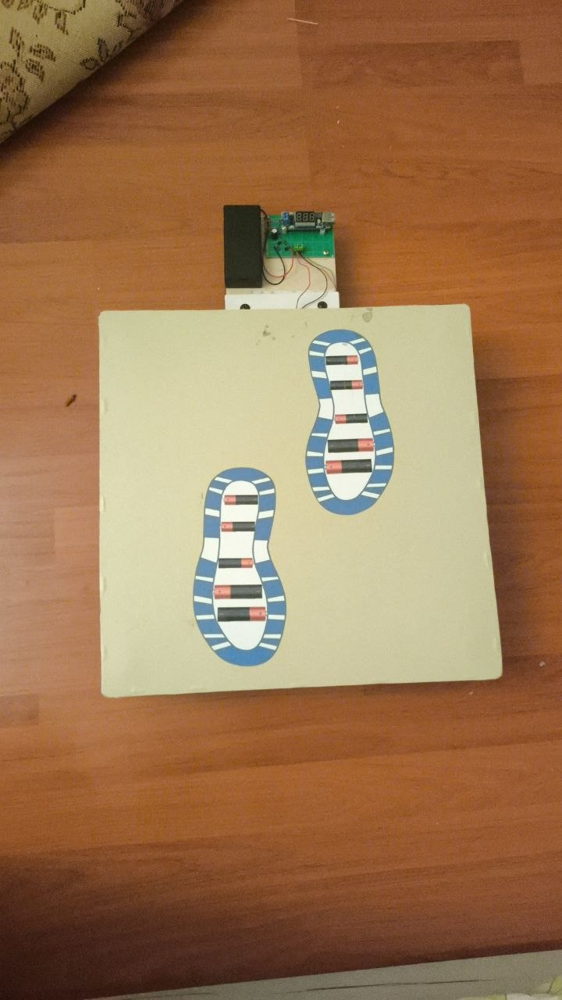

Prototype evidence
Physical tile built and photographed, with visible PZT array, wiring, springs, bolts, and electronics module.
Working prototype - validation stage
EcoStep is a low-cost piezoelectric floor tile prototype from Almaty, Kazakhstan, built to study small-scale energy recovery and public climate-awareness installations.

How it works
Footstep force compresses the tile, stressing a 4 x 4 array of 16 PZT piezoelectric elements. The resulting voltage pulse can be logged, analyzed, rectified, or stored for small low-power applications.
Evidence status
Physical tile built and photographed, with visible PZT array, wiring, springs, bolts, and electronics module.
Arduino logging and Python analysis workflows are prepared for controlled validation tests.
The 0.4 J/step figure is a preliminary estimate until voltage-time tests under known load are completed.
Assumption-based estimator
This calculator uses assumptions only. It is for scenario thinking, not measured EcoStep performance.
Pilot vision
EcoStep is preparing for conversations with schools, labs, public-space operators, and Almaty Metro contacts. The first ask is feedback, measurement support, or a controlled demonstration pathway.
Working prototype, validation stage, pilot concept, controlled demo conversation.
Confirmed partner, verified 0.4 J/step, deployed product, approved installation.